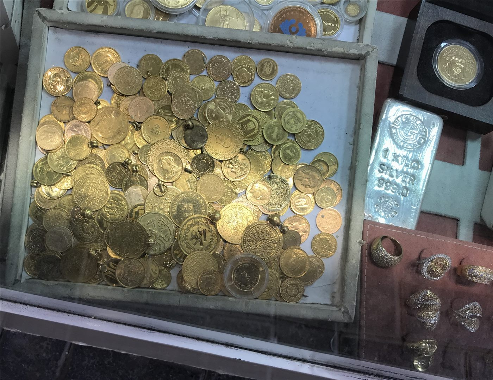

'금 싸게 사서 비싸게 팔아 주겠다' 27억 가로챈 거래소 운영자 조사
귀금속 거래소를 운영하며 시세 차익을 남겨 주겠다고 속여 27억 원을 가로챈 혐의로 운영자가 수사를 받고 있다. 금값 상승기에 반복되는 유형이다.
유선경 기자 · 2026.09.25
橋사회

귀금속 거래소를 운영하던 인물이 투자자들로부터 약 27억 원을 가로챈 혐의로 수사를 받고 있다고 15일 전해졌다.
광고 문의 · 300×250수사 기관에 따르면 이 인물은 '금을 쌀 때 사 두었다가 비싸게 팔아 차익을 남겨 주겠다'는 취지로 자금을 모은 것으로 조사됐다. 실제 매입 여부와 보관 실태가 확인 대상이다.
현물 귀금속을 맡기는 방식의 거래는 예치 사실을 증명하기 어려운 경우가 있다. 보관증만 발급하고 실물을 보유하지 않는 방식이 문제가 된 사례가 과거에도 있었다.
금값이 오르는 국면에서는 '지금 사면 확실히 오른다'는 권유가 늘어난다. 가격 상승 전망 자체는 불법이 아니지만, 원금과 수익을 보장한다는 설명이 붙으면 다른 문제가 된다.
실물 귀금속 거래에서는 보관 주체와 소유권 귀속, 인출 절차가 서면으로 확인되는지를 보는 것이 기본 수칙으로 꼽힌다. 사업자 등록 여부와 제도권 감독 대상인지도 함께 확인 대상이다.